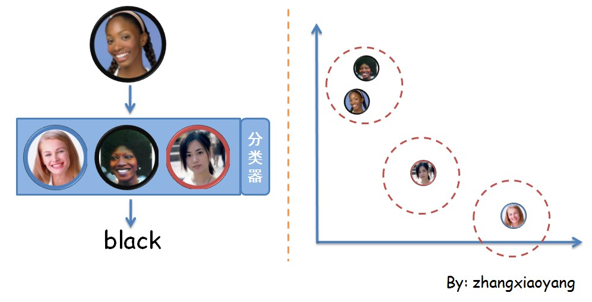
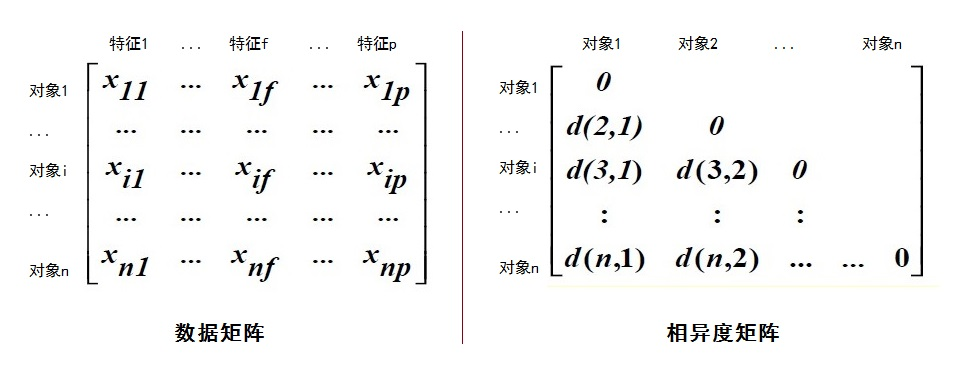
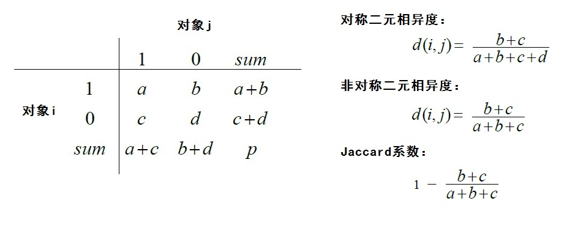
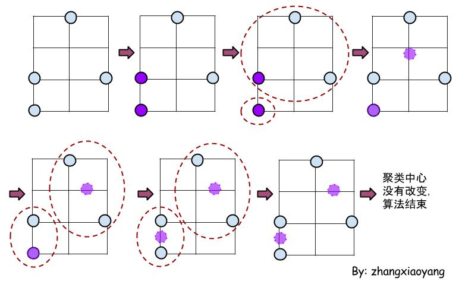
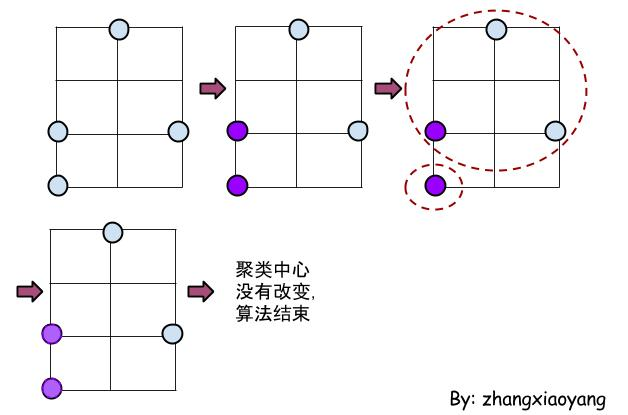
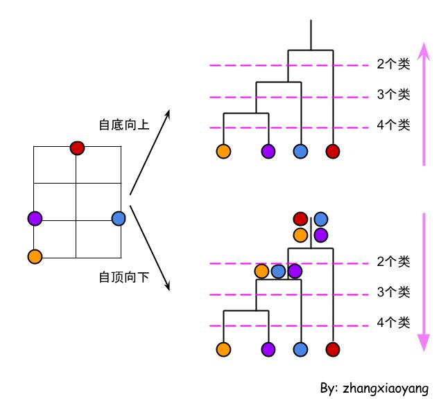
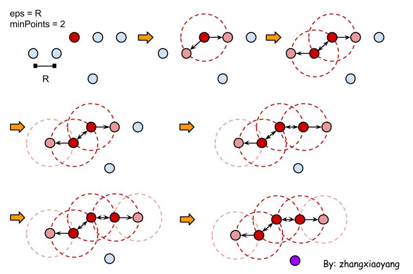

数据挖掘入门(6)
越发的感觉到数据挖掘的目的在于“知过去未来”，而“知过去”的目的一方面是想看清楚过去，另一方面是想预知未来。这一节学习聚类，通过挖掘相似度来区分簇，进而得到聚类的结果。
从分类到聚类
分类是一种有监督的算法，根据训练集得到分类的方法（分类器），以后就可以使用分类器把未知的类别划分到已知的某个类中。
聚类是一种无监督的算法，所以它不需要训练集，也不需要事先知道有哪些类别。它直接对大量的数据进行聚类，得到若干的簇，一个簇就是一类。
分类和聚类可以用下图表示。

可以看到，分类的关键在于有一个分类器，分类器里记录着如何分类。而聚类是根据量化后的距离进行分类，我们事先不知道有哪几类，关键在于距离的计算（相似度、相异度）。
相异度
所以，就有一个小伙提出了表示相异度的矩阵，即相异度矩阵（存储n个对象两两之间的近似性）。同时，也提出了一个表示n个对象的矩阵，即数据矩阵（用p个变量来表示n个对象），如下图。

数据矩阵存放我们的数据源，通常需要计算相异度矩阵，因为很多聚类算法都是以相异度矩阵为基础进行计算的。
可以看到，相异度矩阵中有一个函数d(i,j)，其表示对象i和对象j直接的相异度。相异度对角线均为0，说明对象自身的相异度为0，即完全一样没有什么不同。
因为许多聚类算法都是以相异度矩阵为基础进行计算的，所以聚类的基础就是求相异度矩阵。而求相异度矩阵的关键是求d(i,j)，即两个对象间的相异度。
如何计算相异度？
根据数据类型的不同，会有不同的计算方法。常用的数据类型有：区间标量、二元变量、标称变量、序数变量、向量等。也就是说，我们要根据数据矩阵中值的类型做一些处理，并进行相应的距离计算，也就是相异度计算。
区间标量
数据矩阵中的值是一些粗略线性标度的连续度量，比如重量、高度等。对于这样的值，我们要先对其进行规范化。可以使用度量值（Z-score）进行规范化。
$z_{if} = \frac{x_{if}-m_{f}}{s_f}$，其中$m_f = \frac{1}{n}(x_{1f}+x_{2f}+\dots+x_{nf})$，$s_f = \frac{1}{n}(|x_{1f}-m_f|+|x_{2f}-m_f|+\dots+|x_{nf}-m_f|)$。
上面的公式是把$x{if}$转换为$z{if}$，也就是把第i个对象的第f个特征值（属性值）规范化为另个值。经过规范化以后，才可以计算d(i,j)，进而得到相异度矩阵。
而d(i,j)的计算，可以使用欧式距离（Euclidean）或曼哈顿距离（Manhattan）计算，相应的公式如下。
- 欧式距离：$d(i,j)=\sqrt{(|x_{i1}-x_{j1}|)^2 + (|x_{i2}-x_{j2}|)^2 + \dots + (|x_{ip}-x_{jp}|)^2}$
- 曼哈顿距离：$d(i,j)=|x_{i1}-x_{j1}| + |x_{i2}-x_{j2}| + \dots + |x_{ip}-x_{jp}|$
欧式距离和曼哈顿距离实质上是闵可夫斯基距离的特殊情况：$d(i,j)=\sqrt[p]{(|x_{i1}-x_{j1}|)^p + (|x_{i2}-x_{j2}|)^p + \dots + (|x_{ip}-x_{jp}|)^p}$
二元变量
顾名思义，数据矩阵中的值只有两种状态，即0和1。这时候不需要做什么规范化，直接求解d(i,j)即可。求解公式如下图。

可以看到，非对称与对称的区别在于，在计算非对称二元相异度的时候分母无需关心都为0的特征。Jaccard系数等于1减去非对称二元相异度，因子这个系数挺重要的，就在此一并列出了。
标称变量
标称变量是二元变量的推广，它可以具有多于两个的状态值。比如：红、绿、蓝、黄。
同样无需规范化，根据二元相异度的计算公式，不难理解标称变量相异度的公式：$d(i,j)=\frac{p-m}{p}$，p是单个对象的全部属性个数，m是相同的属性个数，所以p-m就是不同的属性个数。
序数变量
序数变量可以是离散的或者是连续的，序数型变量的值之间是有顺序关系的，如：讲师、副教授、正教授。
对于序数变量，一般为每个值分配一个数，叫做这个值的秩，然后以秩代替来的值作为数据矩阵。相异度根据区间标量相异度计算。
向量
每个一个对象的所有特征值构成一个向量，通常使用余弦相似度来计算相似度（余弦值越接近1，说明夹角越小，说明两个向量越相似），进而得到相异度。
$s = cos\theta = \frac{A \cdot B}{|A| \times |B|}$
聚类（Clustering）
聚类算法有很多种类，具体的选择取决于数据类型、聚类的应用和目的。常用的聚类算法有以下几种。
- 划分法（Partitioning Methods）
- 层次法（Hierarchical Methods）
- 密度法（Density-Based Methods）
- 网格法（Grid-Based Methods）
- 模型法（Model-Based Methods）
以下只是简单的学习了解下各个聚类算法的思想。
划分法
把n个对象划分k个类（k个划分），每个划分表示一个簇。并要求，每个划分至少包含一个对象，每个对象仅属于一个划分。
划分的思想是同一个簇中的对象尽可能的接近或相关，不同簇中的对象尽可能的远离或不同。
然后在每个簇中选一个代表（点）来表示整个簇，可以选择簇的平均值（也就是簇中所有点的平均值，实际可能不存在这个点），也可以选择簇中心区域的某个点代表这个簇。对应的算法是k-means（k-平均算法）和k-medoids（k-中心点算法）。
k-means示例如下图。

k-means算法将中心点取为当前簇中所有数据点的平均值，而在k-medoids算法中，我们从当前簇中寻找一个更好的替代点代替上一轮使用的中心。如果存在这样一个点，到其他所有（当前簇中）点的距离之和最小，这就是一个“好”的点。我们就使用这个好的点代替原来的中心。k-medoids示例如下图。

其实不难发现，初始值的不同可能会得到不同的k-means或k-medoids聚类结果。而且，k-means会很容易受到噪声的影响。所以，就有了一些改进算法。
层次法
对给定的对象集合进行分解（根据层次来分解），即Hierarchical Clustering（层次聚类），有自底向上和自顶向下两种方法。
自底向上的聚类（Agglomerative Clustering）：开始将每个对象作为单独的一个组，然后相继的合并相近的对象或组，直到所有的组合并为一个，或者达到一个终止条件。
自顶向下的聚类（Divisive Clustering）：开始将所有的对象置于一个簇中，在迭代的每一步，一个簇被分裂为多个更小的簇，直到最终每个对象在一个单独的簇中，或达到一个终止条件。
对于自底向上的层次聚类，需要考虑如何定义“相近”。两个点的相近指的就是这两个点的距离。如果计算两个类别的距离，有三个计算方法：
- Single Linkage：又叫做 nearest-neighbor ，就是取两个集合中距离最近的两个点的距离作为这两个集合的距离，容易造成一种叫做 Chaining 的效果，两个 cluster 明明从“大局”上离得比较远，但是由于其中个别的点距离比较近就被合并了，并且这样合并之后 Chaining 效应会进一步扩大，最后会得到比较松散的 cluster 。
- Complete Linkage：这个则完全是 Single Linkage 的反面极端，取两个集合中距离最远的两个点的距离作为两个集合的距离。其效果也是刚好相反的，限制非常大，两个 cluster 即使已经很接近了，但是只要有不配合的点存在，就顽固到底，老死不相合并，也是不太好的办法。
- Group Average：这种方法看起来相对有道理一些，也就是把两个集合中的点两两的距离全部放在一起求一个平均值，相对也能得到合适一点的结果。（来自这里）
对于自顶向下的层次聚类，聚类的关键在于如何选一个簇进行分割和如何进行分割。
通常采用一些衡量松散程度的度量值度量每一个簇，度量值可以是簇中距离最远的两个数据点之间的距离，或者簇中所有节点相互距离的平均值等。然后选择最松散簇进行分割。
而分割的方法也有多种，最普通的就是使用k-means进行二类聚类，即k=2，但是这种方法的计算量很大。所以，我们常用以下这种方法。
- 待分割的簇记为G，在G中取出一个到其他点的平均距离最远的点x，构成一个新簇H
- 在G中选取这样的点x’，使得x’到G中其他点的平均距离减去x’到H中所有点的平均距离最大，将x归入H中
- 重复上一个步骤，直到差值为负
层次聚类示例如下图。

密度法
只要临近区域的密度（对象或数据点的数目）超过某个临界值，就继续聚类。
密度聚类（DBScan聚类）示例如下图。

最开始的时候，图中的点均为浅蓝色点。从中任选一个点作为算法的入口点，图中选择红色的点。设定eps范围为图中的圆的半径R，minPoints为2。
这样，我们标记的红点为中心，以eps为半径画圆，可以发现有两个粉色的点（边缘点）在这个圆中（小于等于半径），并且点的个数不小于minPoints（2大于等于2），所以它们成为一个簇。然后在边缘点中选取一个再次画半径为eps的圆，如果该圆内的点的个数超过minPoints，则该点也标记为中心点，圆内的其它点标为粉色（边缘点）。这样，经过递归，最终会得到一个大的簇。图中红色的为中心点，粉色的为边缘点。如果还有一些点未处理，则在其中再次选一个点开始生成新的簇，算法过程一样。当算法执行结束后，可能会出现既不是边缘点也不是中心点的点，图中紫色的点，这样的点就是噪音。
过程中所说的中心点又称作核心对象（core object）。如果从某一个点p经过一跳可以到达点q，就说对象q是从对象p直接密度可达的（directly density-reachable）。如果从某一个点p经过若干跳可以到的点q，就说对象q是从对象p密度可达的（density-reachable）。如果对象q是从对象p密度可达的，且对象p是从对象q密度可达，就说对象p和q密度相连（density-connected）。上面说的“跳”是指经过箭头的个数，并且只能按照箭头的方向前进。
网格法
基于网格的聚类方法采用一个多分辨率的网格数据结构。它将空间量化为有限数目的单元，这些单元形成了网格结构，所有的聚类操作都在网格上进行。这种方法的主要优点是处理速度快，其处理时间独立于数据对象的数目，仅依赖于量化空间中每一维上的单元数目。
基于网格方法的有代表性的例子包括STING，它利用了存储在网格单元中的统计信息；WaveCluster，它用一种小波转换方法来聚类对象；CLIQUE，它是在高维数据空间中基于网格和密度的聚类方法。
模型法
基于模型的方法为每个簇假定了一个模型，寻找数据对给定模型的最佳拟合。一个基于模型的算法可能通过构建反映数据点空间分布的密度函数来定位聚类。它也基于标准的统计数字自动决定聚类的数目，考虑“噪声”数据或孤立点，从而产生健壮的聚类方法。基于模型聚类方法主要有两种：统计学方法和神经网络方法。
孤立点检查（Outlier detection）
孤立点，又叫做离群点，指数据集中那些小模式数据，它可能是度量或执行错误所导致的, 也可能是固有数据变异性的结果。总之，这样的点与众不同，不合群，和别人都不一样。孤立点的挖掘相当于是对异常的挖掘，而异常检测是相当有意义的。
一般的孤立点检测（挖掘）需要做两件事情：根据数据集定义什么是孤立点、挖掘孤立点。
目前已有的孤立点挖掘算法主要有基于统计的方法、基于距离的方法、基于密度的方法、基于偏离的方法和基于聚类的挖掘算法。
以下介绍摘自http://blog.sina.com.cn/s/blog_5fc375650100ggwu.html。
基于统计的方法
根据数据集的特性事先假定一个数据分布的概率模型，然后根据模型的不一致性来确定异常。
问题是，我们并不知道数据的分布，而且现实数据也往往不符合任何一种理想状态的数学分布，这样就对后期的孤立点发掘产生了很大的困难。而且，基于统计的方法比较适合于低维空间的孤立点挖掘，而实际的数据大多都是高维空间的数据，在这种情况下，事先估算数据的分布是很困难的。
基于距离的方法
以距离的大小来检测小模式，孤立点被认为是没有足够多的邻居。它可以描述为在数据对象集合中N中，至少有P个对象和某孤立点的距离大于阈值D，这个孤立点带有参数P和D。
这种方法的优势在于不需要事先了解数据集本身的特性，是与领域无关的。问题是，对参数P和D估计的困难性。不同的P和D参数的确定会对结果带来很大的影响。由于基于距离的方法的参数P和D是一定的所以发现的孤立点是全局孤立点。
基于密度的方法
对全局各个聚类的数据提出了统一的P和D的参数，但是如果各个聚类本身的密度存在不同,则基于距离的方法会出现问题，因此提出了基于密度模型的局部异常点挖掘算法，通过局部异常点因子LOF的计算来确定异常点。只要一个对象的LOF远大于1，它可能就是一个异常点。簇内靠近核心点的对象的LOF接近于1，处于簇的边缘或是簇的外面的对象的LOF相对较大，这样便能检测到局部异常点，更贴近于实际的数据集的特性。
问题是，局部范围的参数Minpts值存在选择上的困难，可以运用多粒度偏差因子代替Minpts来评价，这样便能得到比较好的解决方案。
基于偏离的方法
通过检查一组对象的主要特征来确定异常点，如果一个对象的特征与给定的”描述”过分”偏离”，则该对象被认为是异常点。现有的基于偏离的方法主要有序列异常技术和OLAP数据立方体方法。前者是以样本集的总体的方差为相异度函数，描述了样本集的基本特征，所有背离这些特征的样本都是异常样本，这种方法在对异常存在的假设太过理想化，对现实复杂数据效果不太好。而后者利用在大规模的多维数据中采用数据立方体确定反常区域，如果一个立方体的单元值显著地不同于根据统计模型得到的期望值，该单元值被认为是一个孤立点，当存在许多涉及多层概念层次的维时，人工探测变得非常困难。
基于聚类的方法
基于聚类的方法的基本思想是将孤立点挖掘的过程转换成聚类的过程。首先将数据集利用已经成熟的模型进行聚类分析，是数据集形成簇，而那些不在簇中的样本点即被视为异常点进行再处理。除了上述所述的4中基本的聚类方法外，还包括基于网格的的方法等。
-- EOF --